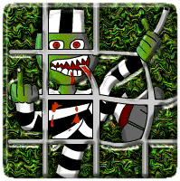

[98.09.20] [kpz] Orky Computer Gaming Company (www.orky.ru) [98.09.22] [kpz] Orky Computer Gaming Company (starcraft clan) (starcraft.orky.ru) [98.09.27] [kpz] (www.rostextile.ru) [98.10.20] [kpz] (www.ultimaonline.msk.ru) [98.11.07] [kpz] (quake.vtsnet.ru) [98.11.14] [kpz] #1 Orky Computer Gaming Company (club.orky.ru) [98.11.14] [kpz] #1 Russian Media Monitoring Agency (www.wps.ru) [98.11.15] [kpz] #2 Orky Computer Gaming Company (club.orky.ru) [98.11.15] [kpz] #2 Russian Media Monitoring Agency (www.wps.ru) [98.11.16] [kpz] (www.ikstro.ru) [98.11.16] [kpz] #3 Russian Media Monitoring Agency (www.wps.ru) [98.11.22] [kpz] (www.expede.net) [98.11.25] [kpz] #1 (www.clicktoplay.com) [98.12.07] [kpz] M #2 (www.clicktoplay.com) [98.12.09] [kpz] M (www.iran.org) [98.12.28] [kpz] FinanceNet (www.financenet.gov) [98.12.29] [kpz] SGI Hungary (www.sgi.hu) [98.12.29] [kpz] M NOAA (ics.nos.noaa.gov) [98.12.30] [kpz] M Anitian (www.anitian.com) [98.12.30] [kpz] M SuperMag (www.supermag.com) [99.01.01] [kpz] qba (www.bmd19.com) [99.01.02] [kpz] Eastwind Electronics (www.hamfair.com) [99.01.05] [kpz] Kemerovonet (RU) (www.kemerovonet.ru) [99.01.09] [kpz] (www.glassinfo.co.uk) [99.01.21] [kpz] Computer Support (www.computersup.com) [99.01.23] [kpz] U.S. BUREAU OF LABOR STATISTICS (www.bls.gov) [99.01.26] [kpz] Department of Education (nces.ed.gov) [99.01.26] [kpz] (www-iip.wiwi.uni-karlsruhe.de) [99.01.28] [kpz] (www.hfn.sacramento.ca.us) [99.01.31] [kpz] (www.tropweb.com) [99.02.02] [kpz] Advanced Medical Systems Inc. (www.amsintl.com) [99.02.19] [kpz] (www.softconcepts.com) [99.03.02] [kpz] U.S. Army Engineer Waterways Experiment Station (www.bweb.wes.army.mil) [99.03.11] [kpz] Air Bed (www.airbed.com) [99.03.14] [kpz] (www.worldwidegazette.com) [99.03.19] [kpz] Compulink Systems Inc. (www.taiwancomputer.com) [99.03.20] [kpz] UniMedia Communication (www.francepub.com) [99.03.21] [kpz] Harper Reed Corporation (www.harperreed.com) [99.03.23] [kpz] Kiowa Sports (www.kiowasports.com) [99.03.24] [kpz] BabylonTown.com (www.babylontown.com) Total Defacements: 40